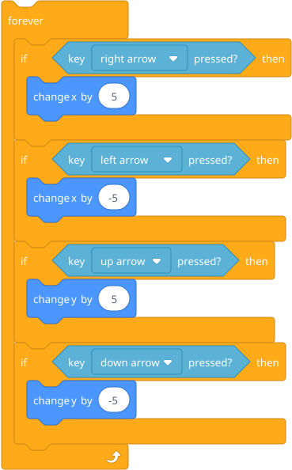
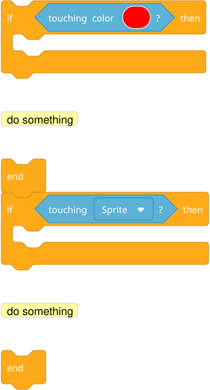
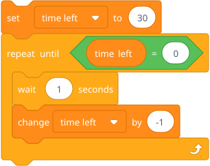
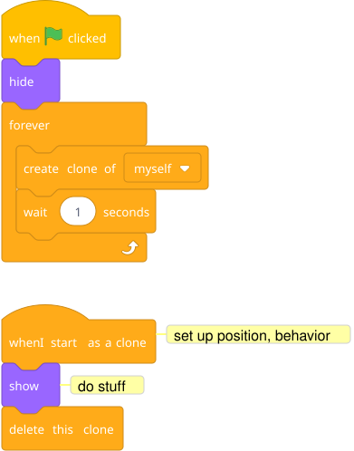
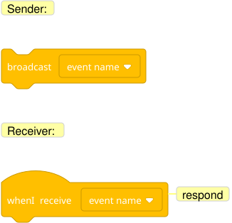

He builds. You help when asked, but resist the urge to take over.
For any game, this sequence generally works:
These are patterns from earlier units he might need to recall:
Arrow key movement (Unit 3):

Collision detection (Unit 3):

Countdown timer (Unit 4):

Spawning with clones (Unit 6):

Sprite communication (Unit 5):

Have someone else play it (sibling, friend, other parent). Watch where they get confused or stuck. This teaches user perspective — another critical engineering skill.
While watching someone play, he should notice:
After the playtest, he picks 2-3 things to fix or improve. This is iteration — the last and most professional step in the engineering process.
If he wants to share it with the world, he can publish it on the Scratch community site (scratch.mit.edu). Other kids can play it, remix it, and comment on it. This is optional but can be hugely motivating — real people playing his game.